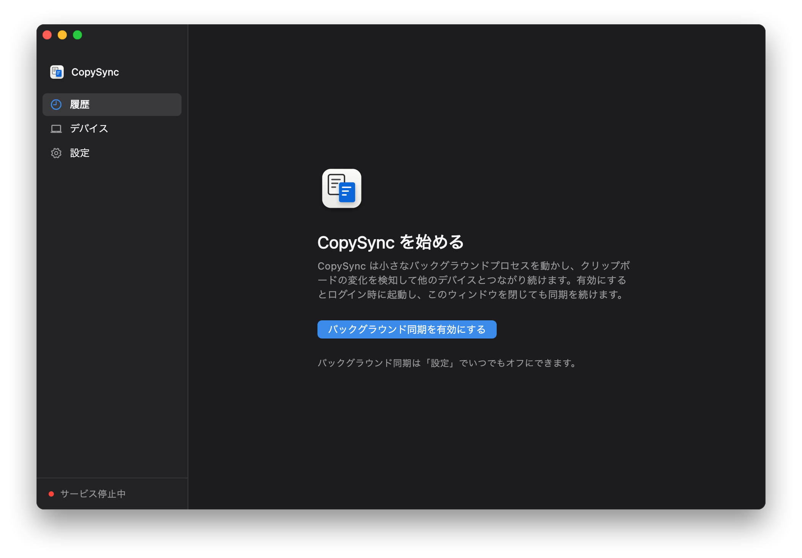
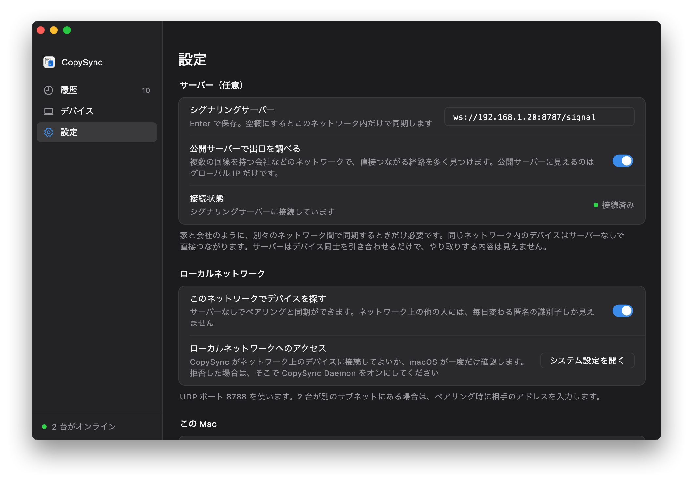

ステップ 1
各コンピューターにアプリを入れる
同期したいコンピューターすべてに入れます。Mac と Windows の組み合わせも自由です。
Mac
- CopySync.dmg をダウンロードして開き、CopySync を「アプリケーション」にドラッグします。
- 「アプリケーション」から開きます。初回は「開発元を検証できません」と表示されます。「システム設定 → プライバシーとセキュリティ」を開き、ページ下部の「このまま開く」をクリックします。
- 「バックグラウンド同期を有効にする」をクリックし、クリップボードの読み取りを聞かれたら許可します。
Windows
- CopySync-Setup.exe を実行します。管理者権限は要りません。「Windows によって PC が保護されました」と出たら、「詳細情報」を押してから「実行」を押します。
- CopySync を開き、「バックグラウンド同期を有効にする」をクリックします。ウィンドウを閉じても通知領域で動き続けます。

ステップ 2
サーバーを用意する
2 台はサーバーを通じてお互いを見つけます。コピーした内容がそこに保存されることはありません。公開サーバーはないので、3 通りの置き方から状況に合うものを選んでください。
公開サーバー
- クラウドのセキュリティグループで TCP 8787、UDP 3478、UDP 32768–60999 を開けます。
- ssh でログインし、インストールスクリプトをダウンロードして、グローバル IP を付けて実行します：
sudo ./install.sh グローバルIP。 - ブラウザーで
http://グローバルIP:8787/healthzを開き、ok と表示されれば完了です。
各コンピューターに入力するアドレス：ws://グローバルIP:8787/signal
- 向いている
- コンピューターが別々のネットワークにあり、どこからでも同期したい場合。ネットワークをまたぐならいちばん手間がかかりません。
- 必要なもの
- グローバル IP を持つ Linux のクラウドサーバー（最小構成で可）と root 権限。
- 注意
- クラウドサーバーの費用がかかります。直接つながらないときの中継はサーバーの帯域に左右されます。中国本土では、ICP 登録のないドメインは使えないので IP を入力します。
LAN
- サーバーにするコンピューターのアドレスをルーターで固定します。
- OS に合ったサーバーをダウンロードしてインストールスクリプトを実行します。Windows は
install.cmdをダブルクリック、macOS と Linux は./install.shを実行します。 - スクリプトが LAN のアドレスを見つけ、最後にアプリに入力するアドレスを表示します。
各コンピューターに入力するアドレス：ws://LANのアドレス:8787/signal（例：ws://192.168.1.20:8787/signal）
- 向いている
- コンピューターがすべて同じ Wi‑Fi か有線ネットワークにある場合（家や会社など）。
- 必要なもの
- 電源を入れたままの Windows・Mac・Linux。同期するコンピューターの 1 台でもかまいません。
- 注意
- そのネットワークの外では同期せず、戻ると再開します。そのコンピューターの電源が切れたりスリープしたりしているあいだも止まります。
LAN ＋ Tailscale
- 各コンピューターに Tailscale を入れ、同じアカウントでサインインします。
- サーバーにするコンピューターで
tailscale ip -4を実行し、100 で始まるアドレスを控えます。 - そのアドレスを付けてサーバーをインストールします（例：
install.cmd 100.101.102.103、./install.sh 100.101.102.103）。
各コンピューターに入力するアドレス：ws://Tailscaleのアドレス:8787/signal
- 向いている
- コンピューターが別々のネットワークにあり、公開サーバーがない場合。
- 必要なもの
- サーバー用に電源を入れたままのコンピューター 1 台と、すべてのコンピューターに同じアカウントの Tailscale。
- 注意
- CopySync を使うコンピューターすべてに Tailscale が必要で、自宅の 1 台は電源を入れたままにします。Tailscale が P2P でつなげないときは DERP サーバーで中継され、遅くなることがあります。
ステップ 3
各コンピューターにサーバーのアドレスを入力
設定を開く
各コンピューターで CopySync を開き、「設定」に進みます。サーバーを動かしているコンピューターも同じです。
アドレスを入力
「シグナリングサーバー」に前のステップで表示されたアドレスを入力し、Return か Enter を押します。
状態を確認
「接続状態」が緑の「接続済み」になれば、そのコンピューターは準備完了です。

「未接続」のままならよくある質問をご覧ください。
ステップ 4
2 台をペアリングする
2 台ごとに一度ペアリングすれば、あとは何もする必要はありません。
- 一台で「デバイス」を開き、「デバイスを追加」をクリックします。5 分間有効な 6 桁のコードが表示されます。
- もう一台でも「デバイスを追加」をクリックし、「コードを入力」に切り替えて入力します。
- 両方の画面に同じ 2 行の指紋が表示されます。1 文字ずつ照合して一致していれば確定します。途中で誰かがあなたのデバイスになりすますのを防ぐ手順です。省略しないでください。


コピーしてみましょう。
一台でテキスト、画像、ファイルをコピーし、もう一台で ⌘V か Ctrl+V を押します。どちらでコピーしたものも履歴に残ります。
困ったときは：LAN のよくある質問 · Tailscale のよくある質問 · 問題を報告